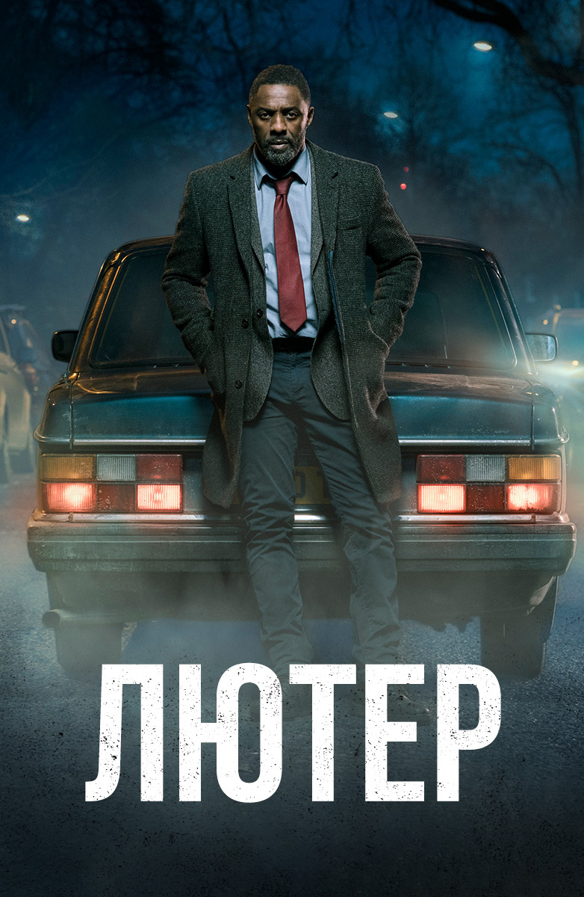

Даже если вы не любитель постапокалиптических историй с участием вездесущих зомби, американский телесериал «Ходячие мертвецы» все равно имеет большие шансы вам понравиться. Пилотная серия истории, основанной на одноименных комиксах, сразу зацепила огромную зрительскую аудиторию и дала начало одному из самых успешных многосезонных хорроров.
11 сезонов
США, 2010 - 2019
драма,фантастика
IMDb: 8.8
2.Игра Престолов
«Игра́ престо́лов» (англ. Game of Thrones) — американский телесериал в жанре фэнтези, основанный на цикле романов «Песнь Льда и Огня» Джорджа Р. Р. Мартина. Снимается под руководством Дэвида Бениоффа и Д. Б. Уайсса для кабельного телеканала HBO. Съёмки ведутся в нескольких странах, включая Великобританию (Северная Ирландия), Мальту, Хорватию, Исландию и Марокко. Премьера первого сезона в США состоялась 17 апреля 2011 года. Показ финального сезона сериала стартовал 14 апреля 2019 года
8 сезонов
США, 2011 - 2019
фэнтези
IMDb: 9,5
3.Теория Большого Взрыва
Великолепный комедийный сериал американского производства о двух ученых (Леонард и Шелдон) и красивой блондинке Пенни, которые живут на одной площадке. Парни, истинные ботаники с докторской степенью, вообще не приспособлены к реальной жизни, особенно к общению с реальными женщинами.
12 сезонов
США, 2018-2019
комедия
IMDb: 8,2
4.Тайная Власть
В центре истории драматического сериала «Тайная власть» находится Макс Истон, человек с тяжелой судьбой. Когда-то он был специальным агентом и считался одним из лучших. Но он устал от секретной деятельности, подвергавшей его жизнь опасности. Макс принял решение отойти от дел и заняться семьей. В тот момент он понял, что больше не хочет возвращаться на службу.
2 сезона
США, 2018-2019
Драма
IMDb: 7,0
5.Лютер
«Лютер» (англ. Luther) — британский психологический детективный сериал. Сериал был создан Нилом Кроссом, которого на его создание вдохновил Шерлок Холмс и Коломбо: своими способностями и нестандартным подходом к раскрытию преступления Лютер походит на Холмса, а формат шоу, когда зрители знают, кто преступник, но не знают как его поймают, был взят под влиянием Коломбо.
 Даже если вы не любитель постапокалиптических историй с участием вездесущих зомби, американский телесериал «Ходячие мертвецы» все равно имеет большие шансы вам понравиться. Пилотная серия истории, основанной на одноименных комиксах, сразу зацепила огромную зрительскую аудиторию и дала начало одному из самых успешных многосезонных хорроров.
Даже если вы не любитель постапокалиптических историй с участием вездесущих зомби, американский телесериал «Ходячие мертвецы» все равно имеет большие шансы вам понравиться. Пилотная серия истории, основанной на одноименных комиксах, сразу зацепила огромную зрительскую аудиторию и дала начало одному из самых успешных многосезонных хорроров. «Игра́ престо́лов» (англ. Game of Thrones) — американский телесериал в жанре фэнтези, основанный на цикле романов «Песнь Льда и Огня» Джорджа Р. Р. Мартина. Снимается под руководством Дэвида Бениоффа и Д. Б. Уайсса для кабельного телеканала HBO. Съёмки ведутся в нескольких странах, включая Великобританию (Северная Ирландия), Мальту, Хорватию, Исландию и Марокко. Премьера первого сезона в США состоялась 17 апреля 2011 года. Показ финального сезона сериала стартовал 14 апреля 2019 года
«Игра́ престо́лов» (англ. Game of Thrones) — американский телесериал в жанре фэнтези, основанный на цикле романов «Песнь Льда и Огня» Джорджа Р. Р. Мартина. Снимается под руководством Дэвида Бениоффа и Д. Б. Уайсса для кабельного телеканала HBO. Съёмки ведутся в нескольких странах, включая Великобританию (Северная Ирландия), Мальту, Хорватию, Исландию и Марокко. Премьера первого сезона в США состоялась 17 апреля 2011 года. Показ финального сезона сериала стартовал 14 апреля 2019 года Великолепный комедийный сериал американского производства о двух ученых (Леонард и Шелдон) и красивой блондинке Пенни, которые живут на одной площадке. Парни, истинные ботаники с докторской степенью, вообще не приспособлены к реальной жизни, особенно к общению с реальными женщинами.
Великолепный комедийный сериал американского производства о двух ученых (Леонард и Шелдон) и красивой блондинке Пенни, которые живут на одной площадке. Парни, истинные ботаники с докторской степенью, вообще не приспособлены к реальной жизни, особенно к общению с реальными женщинами. В центре истории драматического сериала «Тайная власть» находится Макс Истон, человек с тяжелой судьбой. Когда-то он был специальным агентом и считался одним из лучших. Но он устал от секретной деятельности, подвергавшей его жизнь опасности. Макс принял решение отойти от дел и заняться семьей. В тот момент он понял, что больше не хочет возвращаться на службу.
В центре истории драматического сериала «Тайная власть» находится Макс Истон, человек с тяжелой судьбой. Когда-то он был специальным агентом и считался одним из лучших. Но он устал от секретной деятельности, подвергавшей его жизнь опасности. Макс принял решение отойти от дел и заняться семьей. В тот момент он понял, что больше не хочет возвращаться на службу.